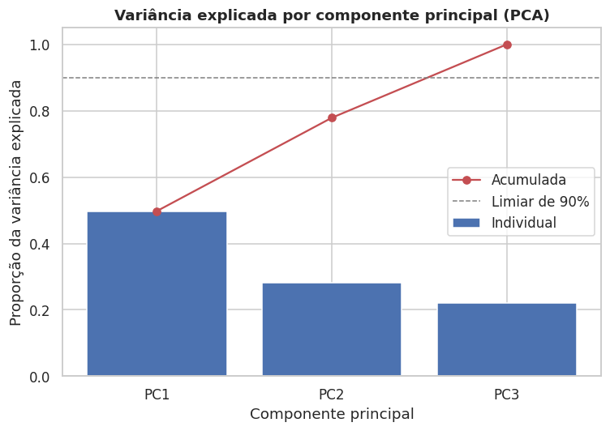
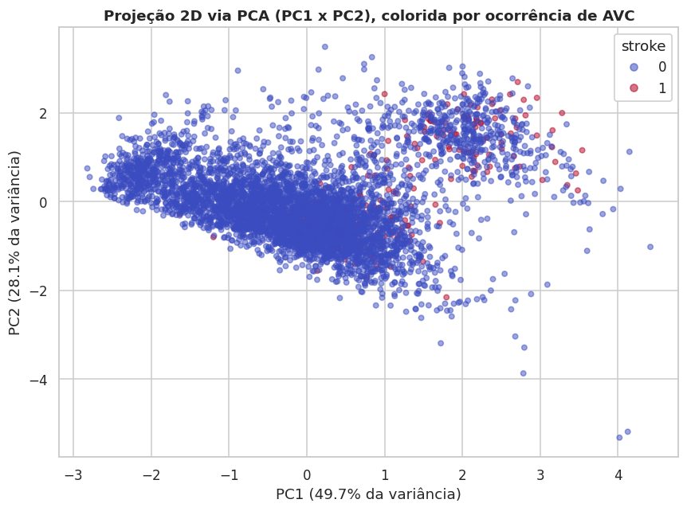
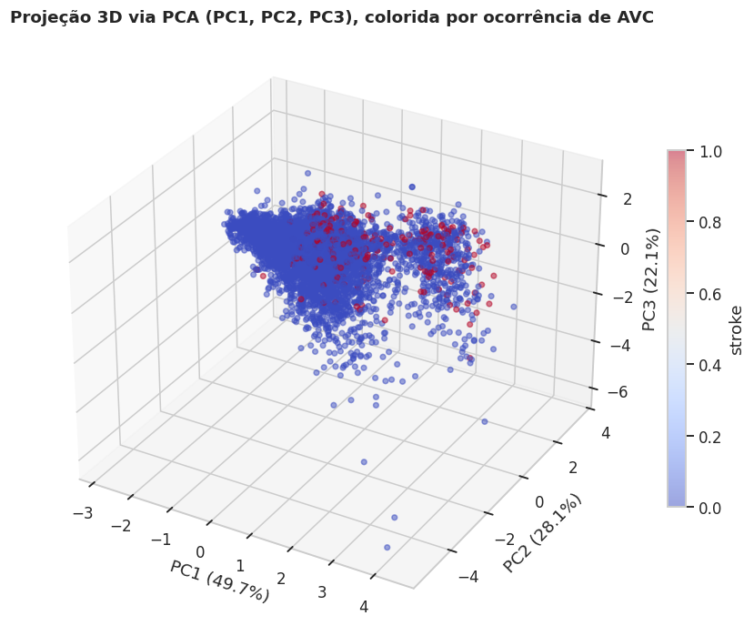

Redução de Dimensionalidade (PCA)
Aplicamos a Análise de Componentes Principais (PCA) sobre as variáveis numéricas padronizadas (age, avg_glucose_level, bmi), com o objetivo de visualizar a estrutura dos dados em 2 e 3 dimensões e avaliar visualmente a separabilidade entre pacientes com e sem AVC.
Como o PCA é sensível à escala, e como não podemos usar informação do conjunto de teste nesta etapa exploratória (para não antecipar decisões que pertencem ao pipeline final), o PCA aqui é aplicado apenas para fins de visualização/diagnóstico exploratório sobre o dataset completo. A versão "oficial", sem data leakage, é reaplicada dentro do Pipeline/ColumnTransformer — ver Pipeline de Pré-processamento — ajustada somente no conjunto de treino.
# Imputação simples (mediana) apenas para viabilizar a visualização exploratória do PCA
X_num = df[["age", "avg_glucose_level", "bmi"]].copy()
X_num["bmi"] = X_num["bmi"].fillna(X_num["bmi"].median())
# Padronização (obrigatória antes do PCA, pois as variáveis têm escalas muito diferentes)
scaler_viz = StandardScaler()
X_num_scaled = scaler_viz.fit_transform(X_num)
pca = PCA(n_components=3, random_state=42)
X_pca = pca.fit_transform(X_num_scaled)
Variância Explicada
| Componente | Variância explicada | Variância acumulada |
|---|---|---|
| PC1 | 49,74% | 49,74% |
| PC2 | 28,14% | 77,88% |
| PC3 | 22,12% | 100,00% |

As duas primeiras componentes (PC1 e PC2) juntas já explicam quase 78% da variância acumulada entre as 3 variáveis numéricas — o que era esperado, já que partimos de apenas 3 features; o ganho de compressão do PCA aqui é modesto, mas ainda útil para visualização.
Projeção 2D e 3D
plt.scatter(X_pca[:, 0], X_pca[:, 1], c=df["stroke"], cmap="coolwarm", alpha=0.5)


Cargas (Loadings)
| Variável | PC1 | PC2 | PC3 |
|---|---|---|---|
age |
0,632 | -0,175 | 0,755 |
avg_glucose_level |
0,505 | 0,832 | -0,230 |
bmi |
0,588 | -0,527 | -0,614 |
age e avg_glucose_level são as variáveis que mais contribuem para PC1, enquanto bmi tem peso mais relevante em PC2/PC3 — ou seja, PC1 funciona aproximadamente como um "eixo de risco metabólico/etário".
Interpretação
No scatter 2D/3D, os pontos que representam casos de AVC (stroke = 1) não formam um cluster isolado: eles se sobrepõem consideravelmente à nuvem de pontos sem AVC, mas tendem a se concentrar em valores mais altos de PC1 — coerente com a associação já observada entre idade/glicose elevadas e maior risco de AVC.
Essa sobreposição indica que as classes não são linearmente separáveis apenas com as 3 variáveis numéricas.